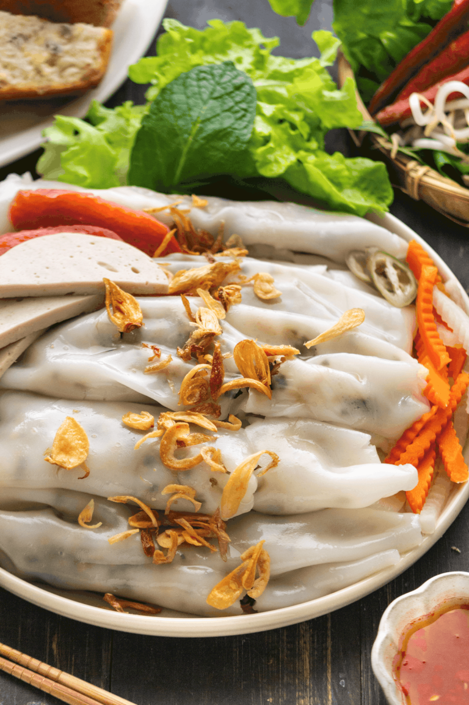

Riskaker med sopp og svinekjøtt

Om Retten
Spennende riskaker fyllt med svinekjøtt og svart sopp
Ingredienser
Riskakene
- 400g banh coun mel
- 1 liter vann
- 1ss nøytral stekeolje
- 1ss salt
Sprøstekt rød løk
- 200g rødløk
- 0.5ss tapiokamel
- Nøytral stekeolje
Fyll til riskakene
- 300g Svinekjøttdeig
- En halv vårløk til garnityr
- 30g tørket judasøre sopp
- 0.5ts salt
- 0.5ts pepper
Valgfri garnityr
- Bønnespirer
- Agurk
- Salat, mynte, asiatisk basilikum
- Vietnamesisk skinke (Cha Lua)